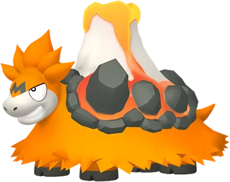
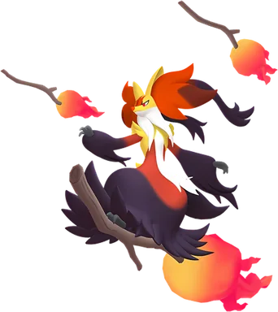
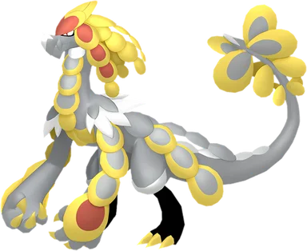
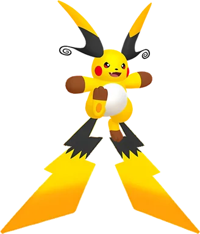
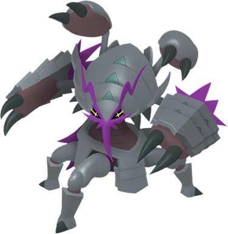
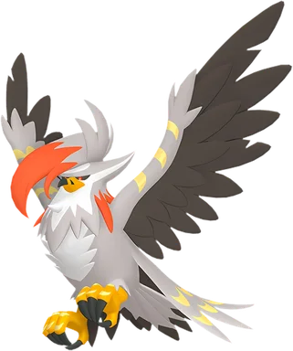

The file on Incineroar.
Pokémon Champions · VGC doubles, Reg M-C. Rated from 13,631 real tournament teams.

▼ FallingTop-cut teams 38% → 22% in 5 weeks: the bars behind it.
Legal in Reg M-CLevel 50Points 0–32No Mega
The format's bouncer. Fake Out, Intimidate, Parting Shot, gone.
- 35%of tournament teams
- 51.2%win rate · 27,028 games
- 65%brought from preview
- 36%leads the game
How to build it
The set players run most · of 2,733 teams
- Item
- Sitrus Berry 65% · or Chople Berry
- Ability
- Intimidate 100%
- Nature
- Sassy or Impish
- Stat points
- 31 HP · 20 SpD · 15 Def
- NormalFake OutPhysical · 40 power99%
- DarkParting ShotStatus96%
- FireFlare BlitzPhysical · 120 power95%
- DarkDarkest LariatPhysical · 85 power41%
Base stats · total 530
- HP95
- Attack115
- Defense90
- Sp. Atk80
- Sp. Def90
- Speed60
Intimidate (100% of sets): lowers both foes' Attack when it comes in. Blaze 0.3%.
How fast it is · level 50
72 what players run
Why it rates 95
- Top-cut presence99
- Picked by strong players99
- Top cut beyond its use77
- Win rate86
The honest part: the same 839 players won 47.2% of games with it and 48% without. It's everywhere because it's safe, not because it wins on its own.
Brought with it most
 Rillaboom3,160 games59%
Rillaboom3,160 games59% Garchomp2,310 games62%
Garchomp2,310 games62% Sneasler1,648 games57%
Sneasler1,648 games57% Raichu1,381 games51%
Raichu1,381 games51%
Teams that won with it
- 10-2
Sitrus-Series · Champions-MC #81
its set: Sitrus Berry · ImpishFlare Blitz · Throat ChopFake Out · Parting Shot


- 9-2
ValkrixVGC Champions League #09
its set: White Herb · BraveFlare Blitz · Darkest LariatFake Out · Parting Shot


- 9-1
Intimidators Challenge · Road to LAIC
its set: Sitrus Berry · ImpishFake Out · Flare BlitzDarkest Lariat · Parting Shot




Hit list. And who's hunting it.
matchups: real damage against the top 30, each with its usual setOpen the KO Board ›It takes down
 Mega Froslass139–165%KOFlare Blitz
Mega Froslass139–165%KOFlare Blitz Whimsicott127–150%KOFlare Blitz
Whimsicott127–150%KOFlare Blitz- Venusaur115–135%KOFlare Blitz

Mega Golisopod105–125%KOFlare Blitz Gholdengo96–115%LikelyFlare Blitz
Gholdengo96–115%LikelyFlare Blitz
It goes down to
 Basculegion119–141%KOWave Crash
Basculegion119–141%KOWave Crash- Sneasler108–128%KOClose Combat
 Pelipper96–113%LikelyWeather Ball in rain
Pelipper96–113%LikelyWeather Ball in rain
Mega Staraptor88–104%MaybeClose Combat Politoed84–100%MaybeWeather Ball in rain
Politoed84–100%MaybeWeather Ball in rain
Weak to WaterFightingGroundRock · walls Sinistcha (8–10%) and Indeedee (immune to Psychic)
Every number from NastyPlot's own data (saved copy, Nov 9). Level 50, as in Pokémon Champions.